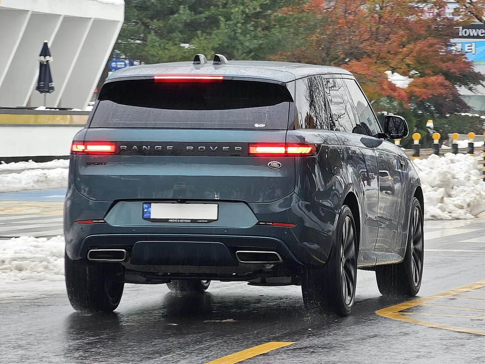
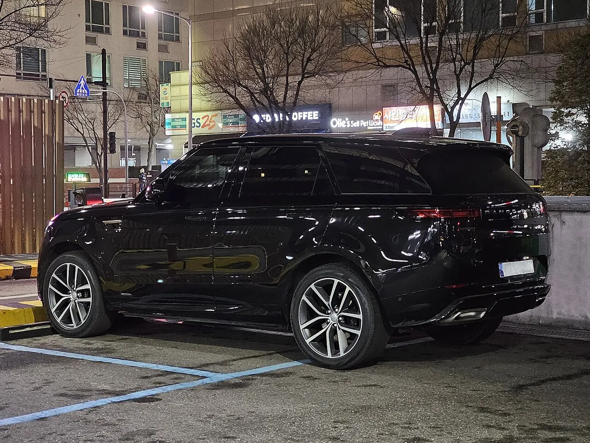
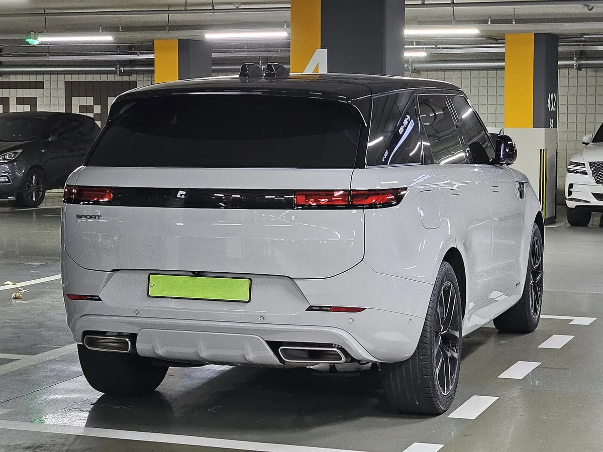

▲ 참고 사진: 현행 레인지로버 스포트(L461) 내연기관 모델. 신형 스포트 일렉트릭 실차 사진이 아니다 ⓒ Wikimedia Commons / Damian B Oh (CC BY-SA 4.0)
"전기 스포트, V8만큼 빠른데 겉모습은 그대로." 랜드로버가 두 번째 순수전기 레인지로버인 레인지로버 스포트 일렉트릭(Range Rover Sport Electric)을 공개했다. Carscoops는 이 차가 0→100km/h 4.5초로 V8 스포트와 같은 가속을 내면서 외관은 현행 스포트와 사실상 같다고 전했고, InsideEVs는 루시드 그래비티의 영역을 정면으로 노린다고 평가했다. 두 매체 보도는 모두 현지 시간 9월 29일자다.
이 글은 Carscoops와 InsideEVs 보도를 중심으로 Autocar India·electricdrives.tv·JLR(재규어랜드로버) 미디어 자료를 교차해 정리했다. JLR 미디어센터의 스포트 일렉트릭 보도자료 원문을 열어 트림·주행거리·생산지 등을 대조했고, InsideEVs 본문은 접속 제한으로 검색 요약 수준만 확인했다. 어느 매체 수치인지 분명히 밝히고, 매체 간 수치가 다르면 함께 적었다. 이 기사는 '스포트' 모델의 공개와 V8과의 비교가 주제이며, 풀사이즈 모델의 중량·견인력 논점은 "2,885kg에 견인력은 2.5톤"… 레인지로버 일렉트릭이 풀어야 할 숙제에서 다뤘다.
1. 무엇이 공개됐나 — 두 번째 순수전기 레인지로버
스포트 일렉트릭은 앞서 공개된 풀사이즈 레인지로버 일렉트릭에 이은 두 번째 전기 레인지로버다. Carscoops는 이 차가 큰형의 기술을 상당 부분 가져왔고 외관은 현행 내연기관 스포트와 거의 구분되지 않는다고 설명했다. 플랫폼은 800V 전기 시스템을 갖춘 개량형 MLA-Flex(Modular Longitudinal Architecture Flex)라고 Carscoops가 전했다.
▲ 참고 사진: 현행 레인지로버 스포트(L461) 내연기관 모델 전면. 신형 스포트 일렉트릭이 아니다 ⓒ Wikimedia Commons / Damian B Oh (CC BY-SA 4.0)
랜드로버 공식 사이트의 예고 페이지는 이 차를 "더 다이내믹하고 어느 때보다 빠른" 모델로 소개하며, 플러그인 하이브리드·마일드 하이브리드 V8·가솔린·디젤 라인업에 합류한다고 밝혔다. 즉 스포트 일렉트릭은 V8을 대체하는 차가 아니라 같은 레인지로버 스포트 안에 추가되는 전기 선택지다.
공식 사이트의 예고 내용은 랜드로버 공식 사이트에서 확인 가능하다. 다만 그 페이지에는 최종 제원이 들어 있지 않았다.
2. 공식 발표 스펙 한눈에
보도별로 확인한 제원을 정리하면 다음과 같다. 매체마다 주행거리 마일 수치가 373·374·378마일로 다르게 적혔다. 킬로미터 기준 WLTP 최대치는 Autocar India가 609km로 표기했고 Carscoops는 "약 600km"로 적었다.
| 항목 | 수치 | 출처·비고 |
|---|---|---|
| 배터리 | 118.5kWh 리튬이온 | Carscoops·Autocar India·electricdrives.tv 일치 |
| 시스템 전압/플랫폼 | 800V, 개량형 MLA-Flex | Autocar India·Carscoops |
| 구동 | 듀얼 모터 AWD | Autocar India |
| 최고출력 | 542hp(550PS급) | Carscoops 542hp, Autocar India·electricdrives.tv 550PS 계열 |
| 최대토크 | 850Nm(627lb-ft) | "역대 스포트 중 가장 높다"(Autocar India) |
| 0→100km/h | 4.5초(다이내믹 런치 컨트롤) | Carscoops·Autocar India. electricdrives.tv는 0→60mph 4.3초 |
| WLTP 주행거리 | 최대 609km(378마일) | JLR 공식 최대 378마일(609km). Carscoops는 373마일, Auto Express 등은 374마일로 표기해 매체별로 다르다 |
| EPA 추정 | 약 330마일 | InsideEVs 보도. JLR은 "실주행 최대 333마일"로 표기했고 EPA 공식 인증치는 별도 확인이 필요하다 |
| 급속충전 | 최대 350kW, 10→80% 약 22분 | Carscoops·Autocar India·InsideEVs. 10분 충전 시 약 136마일(JLR·Auto Express, Carscoops는 137마일) |
| 오프로드 | 도강 깊이 900mm, 최대 경사 45도 | Carscoops(35.4인치)·electricdrives.tv |
| 배터리 보증 | 8년 또는 16만km | Autocar India(JLR는 8년 또는 10만 마일) |
확인하지 못한 항목
- 공차중량·견인력·트렁크 용량은 확인한 자료에서 일관되게 나오지 않아 확인 안 됨이다. 풀사이즈 일렉트릭의 견인력 2,500kg 수치를 스포트에 그대로 적용할 수 없다.
- JLR 공식 자료에 따르면 스포트 일렉트릭은 영국 솔리헐 공장에서 기존 스포트(PHEV·가솔린·디젤)와 같은 라인으로 생산한다. 풀사이즈 일렉트릭의 모터·배터리는 울버햄튼에서 만든다는 것이 JLR 안내다. 스포트의 공식 공차중량은 공개되지 않았고 Auto Express는 V8 대비 약 285kg 무겁다고 보도했다.
3. V8과 정말 같은 속도인가
Carscoops 본문은 스포트 일렉트릭이 "슈퍼차저 V8 스포트와 같은 4.5초"라고 썼다. JLR은 공식 자료에서 "P540 V8 스포트에 필적하는 성능"이라고 표현했다. 아래 표의 V8 열은 이전 P530(530PS·750Nm, 0→100km/h 4.5초) 프레스킷 수치이며, 비교 기준이 P540(2027년형)인지는 세부 제원을 확인하지 못했다. "슈퍼차저" 표기는 Carscoops 원문이고 구형 5.0 V8과의 혼동일 가능성이 있다. Auto Express는 고성능 V8 SV(0→62mph 약 3.8초 추정)보다는 0.7초 느리다고 전했다.
| 항목 | 스포트 일렉트릭 | 스포트 P530 V8(이전 사양) |
|---|---|---|
| 출력 | 542hp(약 550PS) | 530PS |
| 토크 | 850Nm | 750Nm |
| 0→100km/h | 4.5초 | 4.5초 |
| 0→60mph | 4.3초(electricdrives.tv) | 4.3초(JLR 프레스킷) |
결론은 출력과 토크는 전기가 조금 높고 100km/h 가속은 같다는 것이다. 수치는 프레스킷과 보도를 대조한 것이며, 두 차의 실측 가속 비교 데이터는 확인하지 못했다. 최고속도·중량 같은 다른 항목은 자료가 부족해 다루지 않는다.

▲ 참고 사진: 현행 레인지로버 스포트(L461) 내연기관 모델 후면. 하단 배기구가 전기차에서 사라지는 부분이다 ⓒ Wikimedia Commons / Damian B Oh (CC BY-SA 4.0)
4. "똑같이 생겼다"의 근거 — 달라지는 부분
Carscoops는 전기 스포트의 눈에 띄는 차이로 더 공기역학적인 그릴, 전용 알로이 휠, 배기 파이프 없음만 꼽았다. Autocar India도 외관과 실내가 내연기관 모델과 거의 같고 EV 전용 배지가 붙는 정도라고 썼다. 위 참고 사진처럼 내연기관 스포트는 후면 하단에 배기구가 있지만, 전기 스포트에서는 이 부분이 사라진다는 뜻이다. 이 글의 스포트 사진은 모두 내연기관 모델이며 전기 스포트 실차 사진이 아니다.

▲ 참고 사진: 현행 레인지로버 스포트 P400 오토바이오그래피(L461, 내연기관) 측면. 전기 스포트도 실루엣은 이와 같다는 것이 보도의 설명이다 ⓒ Wikimedia Commons / Damian B Oh (CC BY-SA 4.0)
겉모습은 같아도 바닥 아래는 다르다. Carscoops에 따르면 스포트 일렉트릭은 플러그인 하이브리드 스포트보다 차체 구조가 61% 더 단단하고 무게중심이 약 73mm(2.8인치) 낮다. 어댑티브 다이내믹스는 100개 변수를 초당 500회 감시하고, 다이내믹 에어 서스펜션·액티브 롤 컨트롤·후륜 조향이 들어간다. 랜드로버가 스포트 일렉트릭을 '가장 다이내믹한 레인지로버'로 내세우는 근거가 이 부분이다.
비교 기준 주의 — 61% 강성 향상과 73mm 낮은 무게중심은 PHEV 스포트 대비로 보도됐다. V8 대비 수치가 아니다.
5. 풀사이즈 레인지로버 일렉트릭과 어디가 다른가
두 차는 같은 118.5kWh 배터리, 800V, 듀얼 모터, 850Nm를 쓴다. 다르게 보도된 항목만 정리하면 다음과 같다.
| 항목 | 레인지로버 일렉트릭 | 스포트 일렉트릭 |
|---|---|---|
| 배터리·토크 | 118.5kWh, 850Nm | 118.5kWh, 850Nm |
| 0→60mph | 4.3초(JLR 미디어) | 4.3초(electricdrives.tv) |
| WLTP | 최대 372마일(약 599km) | 최대 378마일(609km)로 보도 |
| EPA | 333마일(Jalopnik) | 약 330마일(InsideEVs) |
| 영국 가격 | 15만 4,070파운드부터 | 10만 9,810파운드부터(electricdrives.tv) |
| 공차중량 | 2,885kg(기존 기사) | 확인 안 됨 |
영국 기준 시작 가격은 스포트가 약 4만 4,000파운드 낮다. 두 차 모두 배터리 크기가 같아 스포트가 더 가벼운 SUV인지는 공식 중량이 나오기 전에는 알 수 없다. 풀사이즈 일렉트릭의 견인력·중량 논점은 기존 카프리즘 기사 바로가기에서 볼 수 있다.

▲ 참고 사진: 풀사이즈 레인지로버(L460) 내연기관 모델. 스포트 일렉트릭이나 레인지로버 일렉트릭 실차가 아니다 ⓒ Wikimedia Commons
6. 루시드 그래비티와 붙으면
InsideEVs는 스포트 일렉트릭을 루시드 그래비티에 맞서는 차로 규정했다. 검색으로 확인한 InsideEVs 요약에 따르면 그래비티는 123kWh 배터리, 최대 450마일 주행거리, 400kW 충전, 11분 충전에 약 200마일을 채운다. 7인승도 가능한 반면 스포트 일렉트릭은 5인승이다.
| 항목 | 스포트 일렉트릭 | 루시드 그래비티 |
|---|---|---|
| 배터리 | 118.5kWh | 123kWh |
| 주행거리 | WLTP 최대 609km, EPA 약 330마일 | 최대 450마일(InsideEVs 인용 수치) |
| 최대 충전 | 350kW | 400kW |
| 좌석 | 5인승 | 최대 7인승 |
비교표의 그래비티 수치는 InsideEVs가 제시한 값이며 트림별 차이와 EPA·WLTP 기준 차이는 확인하지 못했다. 또한 스포트 일렉트릭이 2027년형으로는 미국에 나오지 않는다는 보도가 있어 미국 시장에서 그래비티와의 직접 경쟁은 시점이 뒤로 밀린다. 테슬라 모델 X, 포르쉐 카이엔 일렉트릭 등과의 공식 수치 비교는 이번에 확인한 자료가 없어 다루지 않는다.

▲ 루시드 그래비티 전시차. InsideEVs가 스포트 일렉트릭의 경쟁 상대로 꼽은 모델이다 ⓒ Wikimedia Commons
7. 가격·출시·국내 상황
| 구분 | 내용 | 출처 |
|---|---|---|
| 영국 가격 | 다이내믹 SE 10만 9,810파운드, 오토바이오그래피 12만 2,780파운드, 퍼스트 에디션 12만 6,290파운드 | electricdrives.tv·Auto Express(SE·오토바이오그래피·퍼스트 에디션 3종 가격 공개) |
| 트림 구성 | 4개(다이내믹 SE·HSE·오토바이오그래피·퍼스트 에디션) | JLR 공식 보도자료·Autocar India. 영국 가격은 SE·오토바이오그래피·퍼스트 에디션 3종만 공개 |
| 고객 인도 | 영국은 주문 접수 중, 인도는 일부 시장 2027년 1분기 예상 | JLR·Carscoops·Auto Express |
| 미국 | 2027년형에는 없음 | Carscoops |
| 인도(India) | 2027년 3월 수입 판매 예상, 약 2.5억 루피 | Autocar India(예상치) |
공식 자료 기준 트림은 4종이고 영국 가격은 그중 3종만 공개돼 있어 보도가 엇갈려 보일 뿐 충돌은 아니다. 시장별 판매 구성은 다를 수 있다.
국내 출시는 랜드로버코리아가 스포트 일렉트릭에 대해 발표한 내용을 확인하지 못했다. 참고로 스타뉴스는 풀사이즈 레인지로버 일렉트릭의 국내 출시 시점을 2027년 중순으로 전한 바 있다. 스포트 일렉트릭은 별개 모델이라 일정을 단정할 수 없다. 현행 레인지로버 스포츠는 국내에서 P360 다이내믹 SE가 1억 4,100만 원(출시 당시 패키지 포함 기준)부터 판매됐다.

▲ 참고 사진: 현행 레인지로버 스포트 P400 오토바이오그래피(L461, 내연기관) 후면. 전기 스포트에서는 후면 하단 배기구가 사라진다 ⓒ Wikimedia Commons / Damian B Oh (CC BY-SA 4.0)
8. 무엇을 봐야 하나
가속만 보면 V8과 같은 4.5초, 토크는 850Nm로 앞서지만 실제 선택은 다른 지점에서 갈릴 가능성이 크다. 공차중량, 견인력, 실주행거리, 국내 가격이 아직 비어 있다. 풀사이즈 일렉트릭에서 논란이 된 견인력 격차가 스포트에서도 나타날지는 현재 확인된 스포트 수치가 없어 알 수 없다.
9. 요약
레인지로버 스포트 일렉트릭이 공개됐다. 118.5kWh·800V·듀얼 모터로 542hp·850Nm, 0→100km/h 4.5초, WLTP 최대 609km(Autocar India)이며 350kW 충전으로 10→80% 약 22분이 걸린다.
V8과 100km/h 가속은 같고 토크는 더 높다. 외관은 공기역학 그릴·전용 휠·배기구 부재 정도만 다르다는 것이 Carscoops의 설명이다. 풀사이즈 일렉트릭과 배터리·토크는 같고 영국 시작 가격은 약 4만 4,000파운드 낮다.
고객 인도는 2027년 1분기 일부 시장부터이며 국내 출시는 확인되지 않았다. 공식 공차중량·견인력은 확인하지 못했다(생산지는 영국 솔리헐, JLR).